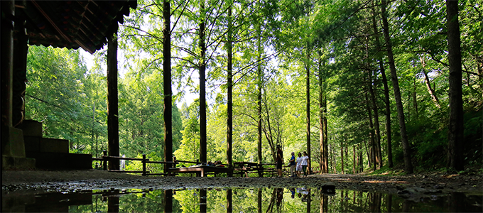
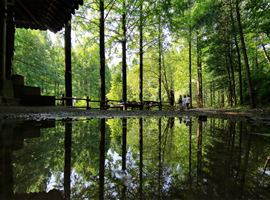
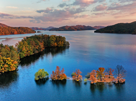
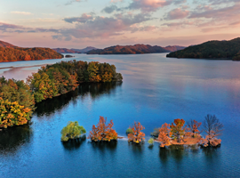
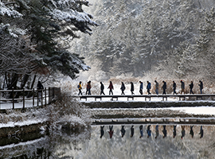
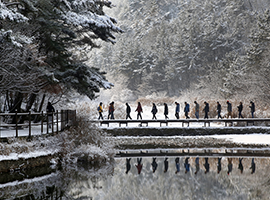
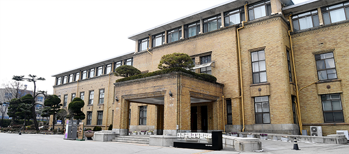

定居环境（自然、文化、旅游）
- Home
- 大田介绍
- 定居环境（自然、文化、旅游）
大自然
-
 鸡足山黄土路
鸡足山黄土路- 大田大德区
- 韩国最大规模的赤脚黄土步道（14.5㎢）
-
 将太山自然休养林
- 大田西区
- 韩国总统访问过的唯一水杉林
-
 
大清湖

大清湖- 大田大德区
- 韩国第三大人工湖
-

 大田树木园
大田树木园- 大田西区
- 中部地区最大规模的市内人工树木园
-

 食藏山
食藏山- 大田东区
- 大田第一山，在瞭望台可观赏梦幻般的夜景。
-
 
鸡龙山（水桶谷）

鸡龙山（水桶谷）- 大田儒城区
- 峻拔美丽的溪谷游园区
文化旅游
-
 大田艺术殿堂
大田艺术殿堂- 大田西区
- 多功能剧场，可上演各类表演。
-

 大田近现代史展览馆
大田近现代史展览馆- 大田中区
- 原忠清南道行政大楼，历经日本殖民统治及韩国战争时期，
截止2012年，一直都是行政中心。
-
 大田OWorld
大田OWorld- 大田中区
- 韩国中部以南地区最大规模的综合主题公园
-

 冬春堂
冬春堂- 大田大德区
- 韩国宝物第209号
- 端庄的冬春堂与周边公园相得益彰。
-

 尤庵史迹公园
尤庵史迹公园- 大田东区
- 城市中的市民休憩处，绿荫中隐藏着瓦顶老建筑。
-

 世博会科学公园
世博会科学公园- 大田儒城区
- 1993年大田世博会主题公园
- 周边有国立中央科学馆和天文台，适合开展科学教育。